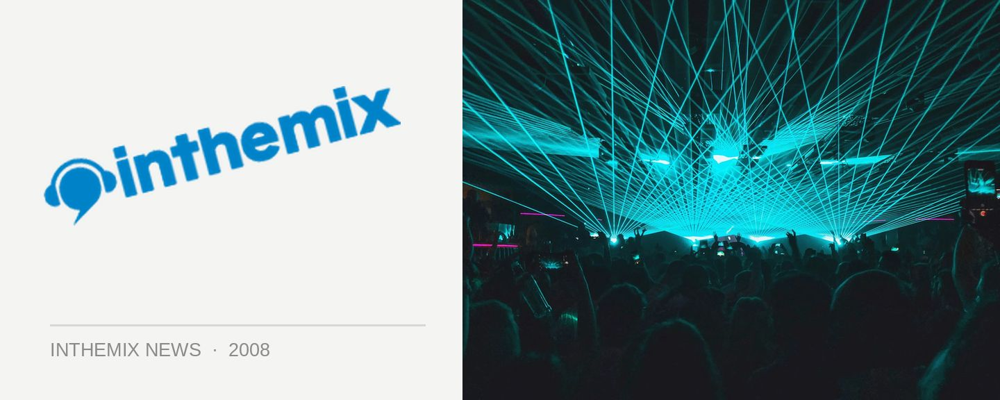

The Herd return with 'Summerland' and showcase gigs
You may have already heard their new single The King Is Dead, an optimistic little tune that celebrates the overthow of the Howard era, as well as the power of change. Well, you can view it as a bit of a prelude to The Herd’s return to the spotlight with an album Summerland that will see the eight-piece pushing their ambitious sound even further. With a national tour promised in August, we’ll be getting a taste when they play to special “showcase” shows in Sydney and Melbourne this July.
The concept behind Summerland is that it’s a mythical place that reflects the musical approach of The Herd themselves – where a relaxed and comfortable vibe thinly veils something a little more complex, where the joyous celebrations heard in The King Is Dead is tempered with threat. And it’s in this space between joy and melancholy that The Herd do their best work – welcome to Summerland.
And since the release of their acclaimed The Sun Never Sets album in 2004, The Herd have developed into somewhat of an Aussie hip hop supergroup with several of its members going on to front successful side projects, with Unkle Ho and Urthboy both putting out solo releases and Ozi Batla forming the Astronomy Class crew. But now, The Herd have are back together and set for a huge 2008.
The Herd’s Summerland is out May 24th through Elefant Traks/Inertia, and they’ll be hitting the road in August. For a bit of a warmup, check out the following ‘showcase’ gigs in June…
Friday 13th June – HIFI BAR, Melbourne
Saturday 14th June – THE FACTORY, Sydney